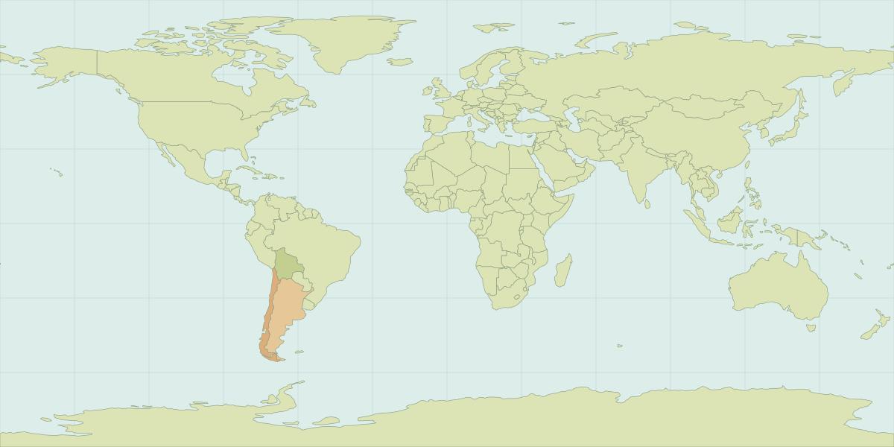

01 / ARGENTINA5 DAYS

{kind=link}
WINE COUNTRY & WRONG TURNS
Starting in Argentina.
Food, wine country and a first taste of the road. Valle de Uco and thermal springs are on our radar.
Arriving
Counting down to the journey.
TWO CULTURES. TWO LANGUAGES. ONE ADVENTURE.
Real people. Wrong turns. Stories in English y español. We’re getting lost in Latin America—and you’re coming with us.
01 / THE FIRST CHAPTER
About a month on the road. From Mendoza to coastal Chile, then deeper into Bolivia. This is the starting plan. The people we meet will help write the rest.
WINE COUNTRY & WRONG TURNS
Food, wine country and a first taste of the road. Valle de Uco and thermal springs are on our radar.
Arriving

CITY STREETS TO PACIFIC AIR
Santiago’s Plaza de Armas and Metropolitan Cathedral, the Maipo Valley and Viña del Mar. A new country, new conversations and a change of pace.
Arriving

STAY LONGER. GO DEEPER.
Time to settle in, meet people and follow local leads. Fewer boxes to tick. More stories to stumble into.
Arriving
Countdowns run to midnight at each destination. The unexpected is still the point. Vamos a ver qué pasa.
02 / NICE TO MEET YOU · MUCHO GUSTO
We’re two travel companions, one Latino-American English speaker who learned Spanish later in life, and one Bolivian born native Spanish speaker who learned English later in life, experiencing Latin America together. Sometimes we see things differently. Sometimes we get lost along the way. Usually, that’s where the good story starts.
English and Spanish live side by side here: in conversations with locals, over food, on bus rides and in the moments we couldn’t have planned.
You don’t need to speak both languages.
You just need a little curiosity.
03 / FROM THE ROAD
Missed buses. New friends. A meal we can’t stop talking about. The big adventures and everything between them will live here.
Longer films with room for the people, the problems and the unexpected payoff.
Language mix-ups, food discoveries and the moments too funny to leave on the camera.
Travel days, behind the scenes, photo diaries and a say in what we try next.
We’re getting the first chapter ready. Channel links and episodes will appear here when the relaunch is live.
04 / THE TRAVEL NOTEBOOK
Useful notes will grow out of the trip: what we spent, how we got around and what we wish we’d known. First, we go. Then, we share.

Click a flag to zoom in. Select another stop or return to the whole world.
POSTCARDS FROM THE ROAD
Tap a stop to explore our route. This is where our trip photos and stories will land.
Argentina
Photos to come
The trip is still ahead. Check back for photos, favorite finds, and stories from this stop.
Chile
Photos to come
The trip is still ahead. Check back for photos, favorite finds, and stories from this stop.
Chile
Photos to come
The trip is still ahead. Check back for photos, favorite finds, and stories from this stop.
Bolivia
Photos to come
The trip is still ahead. Check back for photos, favorite finds, and stories from this stop.
Bolivia
Photos to come
The trip is still ahead. Check back for photos, favorite finds, and stories from this stop.
An illustrated route, with room for detours.
05 / LET’S MAKE SOMETHING REAL
We partner with stays, restaurants, local experiences and travel brands to create human, culturally curious content in English and Spanish.
We’re not just showing you where we’re going.
{kind=link}
{kind=link}